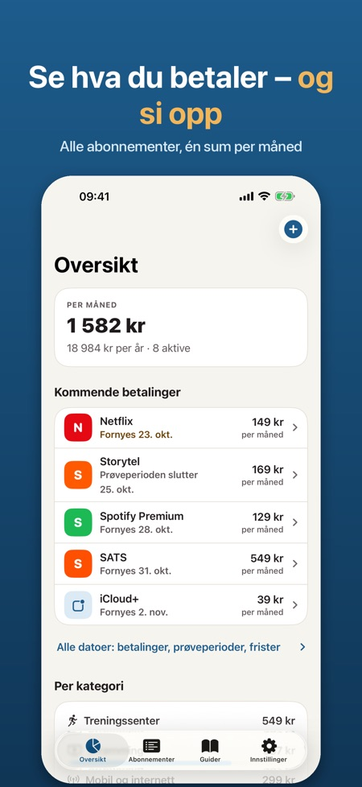
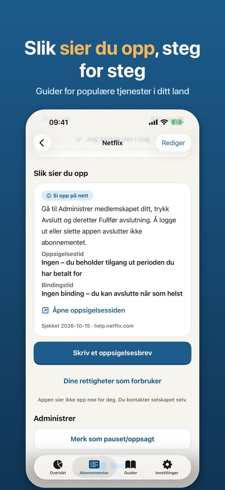
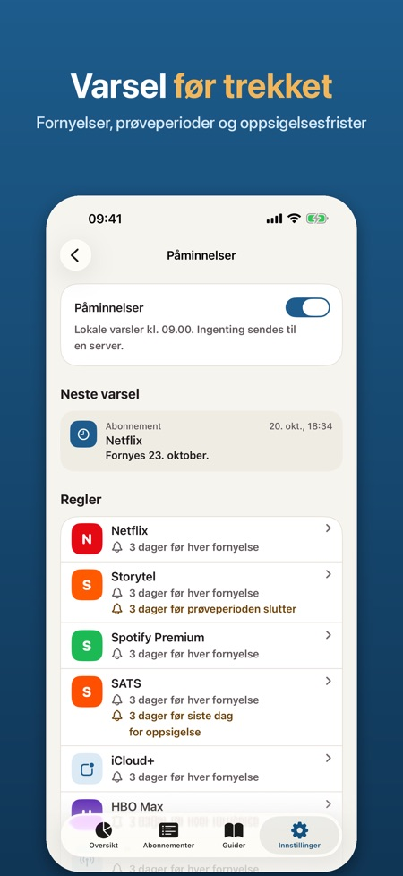

Varsel før trekk og frister. Se hva du betaler hver måned, få varsel før hvert trekk og si opp med et ferdig brev. Ingen bankinnlogging – alt blir på iPhonen din.



Se alle abonnementene du betaler for, få varsel før de fornyes og se hvordan du sier dem opp.
LAGET FOR NORGE OG RESTEN AV NORDEN
Velg blant populære tjenester i Norge, Sverige, Danmark og Finland: strømming, musikk, mobil, treningssenter, lydbøker og mer. Betalingsperiode og hvordan du sier opp fylles inn for deg – eller legg til dine egne.
SE HVA DU BETALER
• Totalt per måned og per år
• Kostnad per kategori og ditt dyreste abonnement
• Merk når du sist brukte noe, og finn det du betaler for uten å bruke det
DET SOM KOMMER
• Kommende trekk og frister, 30 eller 90 dager fram
• Statistikk per måned eller per år, per kategori
• Alle oppsigelsesguider i en egen fane og varslene samlet på ett sted
VARSEL I TIDE
• Før hvert trekk, opptil 30 dager i forveien
• Før en prøveperiode blir et betalt abonnement
• Før siste frist for oppsigelse og når bindingstiden er over
SI OPP UTEN STRESS
• Oppsigelsesguider per tjeneste og land med direkte lenke, oppsigelsestid, bindingstid og datoen vi sist sjekket dem
• Et tydelig oppsigelsesbrev på norsk, svensk, dansk eller finsk med navn, kundenummer og forespørsel om skriftlig bekreftelse. Del via Mail eller Meldinger, kopier eller lagre som PDF – du sender det selv
• Korte tekster om rettighetene dine som forbruker
WIDGET PÅ HJEM-SKJERMEN OG LÅSESKJERMEN
Månedssummen og neste trekk med et blikk.
PRIVAT
Ingen konto, ingen bankinnlogging, ingen reklame. Alt blir på iPhonen din. Lås med Face ID og eksport som CSV hvis du vil.
PRO
Uten Pro kan du følge opptil 5 abonnementer med varsler og oppsigelsesguider. Pro gir ubegrenset antall abonnementer, oppsigelsesbrev, kostnad per kategori, widget og CSV-eksport. Velg årsabonnement eller et engangskjøp. Årsabonnementet starter med en prøveperiode på 7 dager.
Appen er uavhengig og ikke tilknyttet noen av tjenestene i listen. Tjenestenavnene tilhører sine eiere. Oppsigelsesguidene og tekstene om rettigheter er informasjon, ikke juridisk rådgivning. Appen sier aldri opp noe på dine vegne.